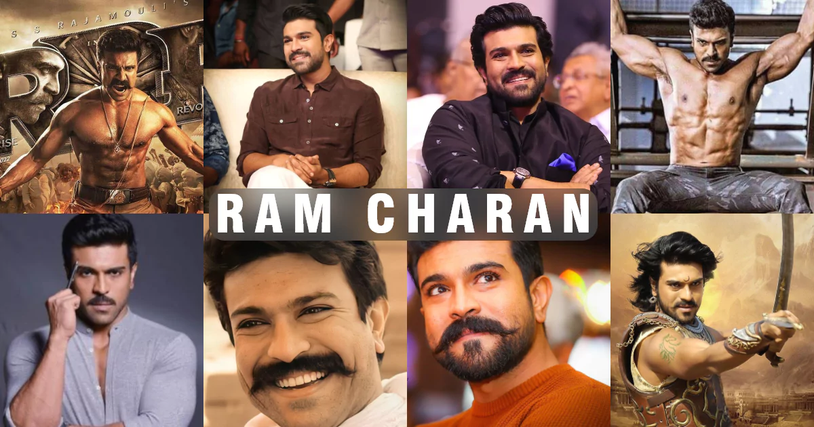

Ram Charan, widely known as the "Mega Power Star," is a global phenomenon who has evolved from being the son of Megastar Chiranjeevi to one of India's most respected actors. He is celebrated for his intense screen presence, disciplined performances, and world-class dancing.
His career hit a historic peak with S.S. Rajamouli's RRR, where his portrayal of Alluri Sitarama Raju earned him international acclaim and a massive global following. Ram Charan's journey spans over two decades, from his lead debut in Gangotri (2003) to delivering numerous blockbusters across genres.
The release of RRR on global platforms catapulted Ram Charan into international stardom. His performance earned critical acclaim and several international award nominations, making him a household name across continents. As of early 2026, he remains one of the most bankable pan-Indian stars.
Beyond acting, Ram Charan is a successful entrepreneur, owning the Hyderabad Polo and Riding Club and his own production house. He actively participates in philanthropic activities through the Ram Charan Foundation and balances professional commitments with strong family values.
| Actor Profile: Ram Charan | |
|---|---|
| Feature | Details |
| Full Name | Ram Charan Teja |
| Born | June 27, 1985 |
| Birthplace | Vijayawada, Andhra Pradesh |
| Nicknames | Mega Power Star, King of Tollywood |
| Occupation | Actor, Producer, Entrepreneur, Polo Player |
| Debut Film | chirutha (2003 – Lead) |
| Notable Films | Magadheera, Racha, Dhruva, Rangasthalam, RRR, Acharya |
| Awards | 3 Filmfare Awards South, 3 Nandi Awards, 2 SIIMA Awards |
| Upcoming Projects | RC15 (with buchibabu peddi, Other untitled projects |
| Business Ventures | Hyderabad Polo Club, Konidela Production Company |
| For More Info | Click here to Know More about Ram Charan |